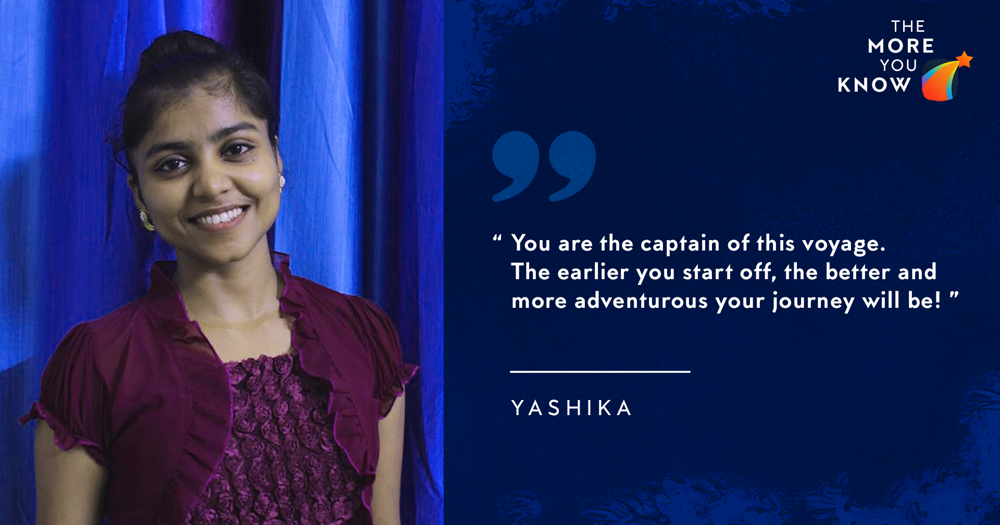

April 20, 2020
This blog is all about grabbing a Chemical Engineering Core Internship with more inclination towards Dr Reddy’s internship profile. My internship preparation was mainly during the second year summers and I strongly suggest to use this extended vacation effectively.

I aimed only for Core Chemical Engineering Internships because I mostly liked Core Chemical Engineering courses (and when I say that I liked a course that implies that I liked learning the course contents rather than meaning that I got a good grade in it).
I didn’t exactly know what my actual core work would be like, yet I was determined to apply for core internships. Surprisingly, I also didn’t have any core project experience until my first UGP. So, at the end of sophomore year all I had was interest and enthusiasm to continue in the core of my department. Fortunately, I did my first UGP in the summer semester after sophomore year but that too under the pressure that I didn’t have any good enough project to present in my resume :P. Here, before starting off with the details, I would like to quote something that summarizes my lessons :).
“You are the captain of this voyage... The earlier you start, the better and more adventurous will be your journey!”
I got shortlisted for interviews of Dr Reddy’s and HUL. Dr Reddy’s interviewers did not bother to ask anything about the project work. But I felt that my friends who had good projects had a boon for the interview. So, for the project part, it’s really beneficial to have one but not having one does not hinder you from acing your interview.
Selection Procedure
For Dr Reddy’s
Screening Test assessing Technical, Aptitude and Psychometric skills
Group Discussion (GD)
Interview (HR and Technical)
For HUL
Resume Screening
Group Discussion (GD)
Interview 1 (Technical)
Interview 2 (HR)
TEST Preparation
Dr Reddy’s test had two parts:
Technical Test - The technical test was a single correct type. It had questions in mixed format from topics like names and usage of polymer, fluids, thermodynamics, et cetera.
Aptitude and Psychometric Test - This portion was quite similar to the aptitude & psychometric test of P&G (Procter & Gamble) Company, in terms of interface and question patterns. Having an experience of the test of P&G would save you time and make you less worried. Most questions herein were from non-verbal aptitude and number puzzles. You can get access to the test of P&G by applying for any post over their website. If you’re genuinely interested in P&G then it’s well and good, otherwise, do this just for getting an exposure.
Resume Building
For resume making, I went through the resumes of seniors that were sent by SPO. I then started to note down all my points roughly and created a preliminary framework. Then I started getting the resume rectified by seniors and refined it as per their suggestions. I used to send the resume to 4-5 seniors at a time, refined it and then sent it to another 4-5 seniors and so on.
Never hesitate to take help from seniors. They also would have committed mistakes at their first go, so it’s all fine. Also, do not have an inferiority complex if you do not have many points to add to the resume, your seniors would be helping you in that department as well :)
Group Discussion (GD)
I went through some dos and don’ts of GD from online sources and materials available on the SPO website. I also attended mock GDs conducted by SPO and I personally found those really useful. In mock GDs, there is a senior who moderates the entire GD and you get a short review on your performance at the end of it. I was personally confident about the GD part and felt like preparing more for the interview. However, if you want to strengthen your GD skills, you can form groups with your peers and practise mock GD. Topics for GDs are available easily over the internet.
They provided us with 1 page of GD question and description. Dr Reddy’s topic was much more technical than HUL. For HUL, we were supposed to think as an IT sector manager whereas for Dr Reddy’s it was as a plant head or as a technical worker.
Major points which I found worthy enough to be kept in mind
It’s good if you start the GD but don’t rush to start. Take your time, read the question properly!
Don’t randomly use high-level technical terms, it’s not required.
If you are able to connect to any of your courses, it's good but explain in a way that everyone in the group gets your point. Additionally, you may even use hand gestures. In my GD, one of my groupmate mistook an impeller as a 2D blade (the impeller's picture was given in the question paper, even though I didn’t know what an impeller was till then :p). I pointed that out and showed it using my palm that it was slightly bent.
If you can find any real-life application related to that it will be a plus point. I used the correlation of household mixture blade to prove my point that even though the impeller is at the bottom but it can still mix everything well (it sounds pretty lame but this was the first time when the HR particularly observed someone).
Stay calm throughout the GD.
Interview Preparation
Prepare courses like Fluid Mechanics, (ESO201) Thermodynamics-1, (CHE221) Thermodynamics 2. For HUL, they don’t ask questions from CHE221 but Dr Reddy’s usually asks questions from CHE221. Keep your basics strong and don’t forget to check practical applications like the application of zeroth law in thermometers. Make sure that you can verbally present whatever you prepare. For example, how does an A/C or centrifugal pump work? You may know how it works but make sure you prepare how to professionally present it while you brush up your concepts.
Interview flow
For Dr Reddy's we had a combined interview for both HR and technical, however, for HUL we had separate interviews for both technical and HR. Dr. Reddy's Interview: It started with general questions from my resume, such as, questions about my school, family background, my expectations from life and a follow-up question. Then they began with technical questions. I was asked for a subject preference (I said thermodynamics so all the questions were from thermodynamics but from CHE221 and not from ESO201). Most questions were basic in nature. Some of the questions were: What is Raoult’s law? What is its application? Draw bubble point and dew point curve? What is bubble point and dew point? If we have a solution at this point (marked a point on the graph), what will be its dew point and bubble point? What is an ideal solution? What is the physical meaning of positive deviation and negative deviation?.
After technical questions, I was asked questions from my resume about social initiatives (working with NGO) and extracurricular activities.
If possible brush up real-life examples from 11th and 12th standard, such as, fluid flow motion when a ball spins (a friend of mine was asked this when he told them to be interested in cricket).
HUL Technical Interview: It started with a brief introduction about myself and to explain my projects (including TA project, questions such as Which gear was used?, etc were put up). Again they asked me for a choice of subject (again my reply was thermodynamics). Questions here were mainly from ESO201. Some of the questions were: What is zeroth law? A real-life example of zeroth law? What is the third law of thermodynamics? How does an air-conditioner work? Draw and explain the Brayton cycle? Where is the Brayton cycle used? Draw and explain the refrigeration cycle?
Lessons I learnt from this journey
Prepare for 2-3 profiles to be on a safer side. I prepared only for 1 profile. (I don’t know what to call that may be overconfidence xD)
Seniors are always ready to help you, never hesitate to approach them.
It’s really important how you present your answers verbally.
It’s okay if you don’t have any strong project points, you can still ace your interview.
- Yashika
edited by Vartika Gupta